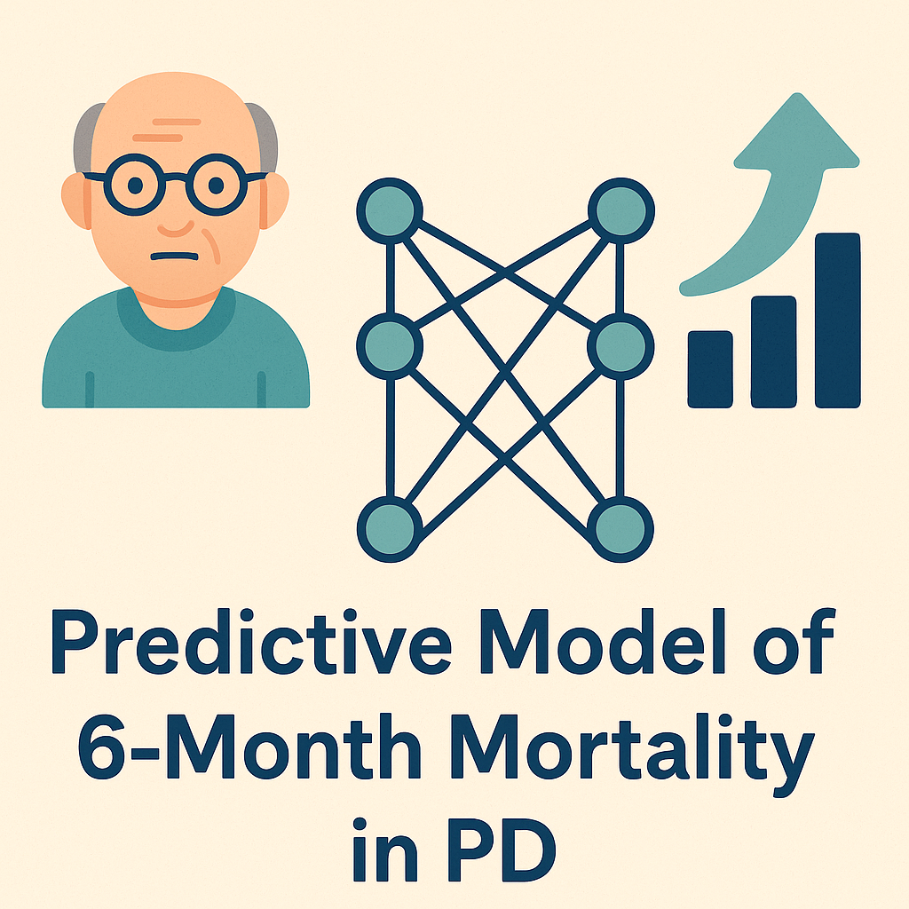
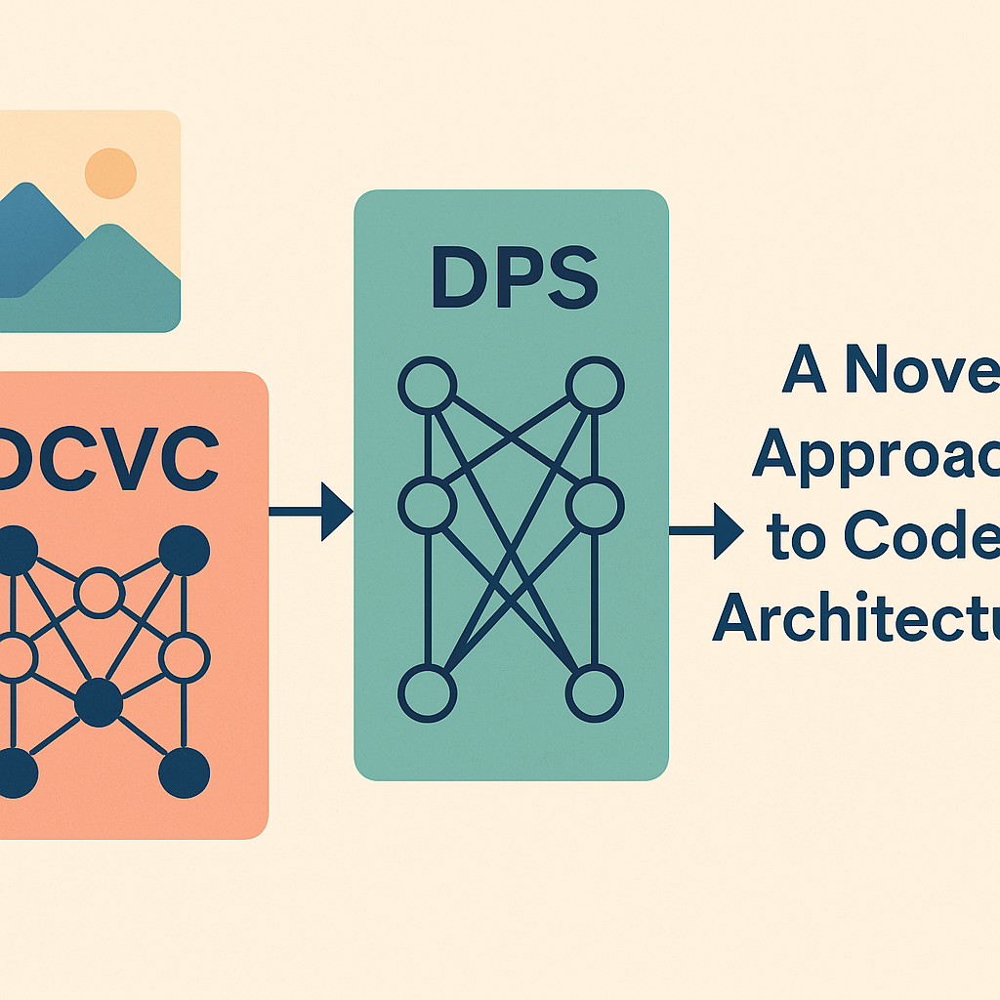
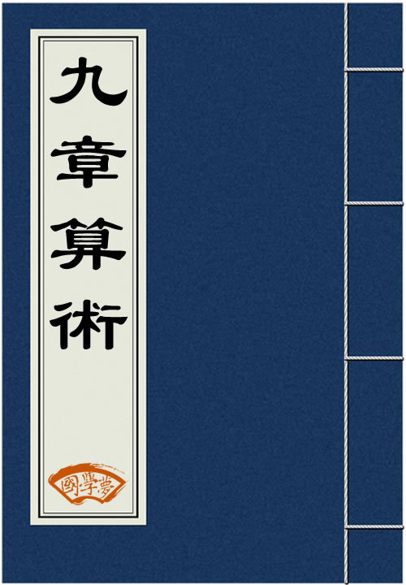
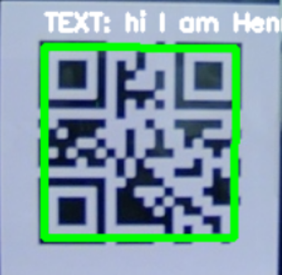
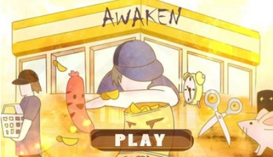
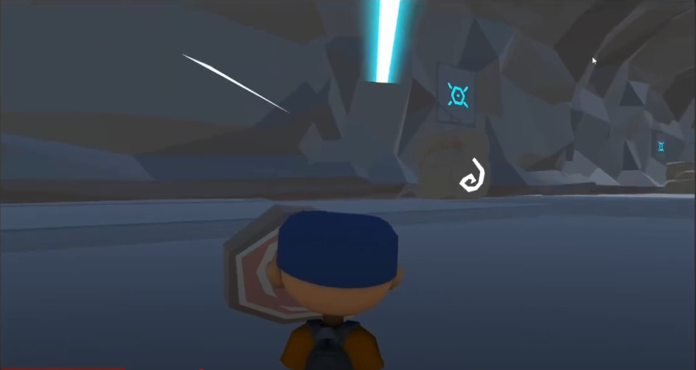

Research
My research interests span computer vision, generative and compression models, vision for 3D understanding, and applied AI in healthcare.
Most of my research is about applying machine learning and deep computer vision to healthcare and visual computing.
Projects span Parkinson's hospice risk prediction, image/video compression & generation, and early-stage 3D mesh motion prediction.
Some works are highlighted.
|
|

|
Predicting 6-Month Mortality for Persons Living with Parkinson's Disease
Hanzhang (Henry) Yin*; Jennifer Corcoran, MD*; Hanjia Lyu; Brian McGarry, PhD; Thomas Caprio, MD, MPH; Amy Ogilvie, PhD; Andrew Huang, MD; Jiebo Luo, PhD; Benzi M. Kluger, MD, MS.
(University of Rochester, URMC)
Research project, Feb 2024 — Sep 2025
Built a PD-specific prognostic model using MDS 3.0 linked with the Vital Status File. Benchmarked Logistic Regression, LightGBM, Random Forest, Naïve Bayes, and introduce an advance clustering method base on Logistic Regressin and LightGBM Model on Admission and Longterm Dataset.
Moreover, we developed a Bi-LSTM deep learning model focusing on a newly provided time series data. We compared against Medicare hospice guidelines and analyzed feature contributions to highlight PD-unique signals.
|
|

|
Concatenating Deep Compression (DCVC) with Diffusion Posterior Sampling
Hanzhang (Henry) Yin, Advisor: Prof. Yan Wang
(Tsinghua University)
Research project, Jul 2024 — Oct 2024
Investigating codec-style pipelines where compressed latents serve as a structured prior for diffusion-based denoising and generation. Evaluating on ImageNet‑1k with FID/PSNR and studying robustness for denoising and generative editing in the loop.
|
|

|
The Ancient Roots of Linear Algebra: An Analysis of Rectangular Arrays in Chinese Mathematics
Hanzhang (Henry) Yin, Advisor: Prof. Matthew Dannenberg
(University of Rochester)
Research project, Jan 2024 — Apr 2024
The paper recounts and revises the development of linear albegra system from ancient Chinese referenced on the acient Chinese text: The Nine Chapters on the Mathematical Art.
The two main related Chapter that will be examined are: “Excess and Deficits” and “The Fangcheng Procedure” in both their mathematical concepts and some representitive questions.
Furthermore, this paper will compare mordern approaches on linear algebra system to the ancient Chinese strategies, finding potential insight that reveals the process of how mathematics evolved.
|
Internship
|
|
KeeperAI
Hanzhang (Henry) Yin, Advisor: Prof. Yan Wang
(Tsinghua University)
Software Development Engineer Intern, Jun 2023 — Aug 2023
Developed and enhanced front-end webpage designs using JavaScript and Fluent UI, integrating external NLP AI chatbot plugins to facilitate event scheduling within the Microsoft Teams app.
Resolved security vulnerabilities in the user login verification module by redesigning regular expressions and hashing strategy, improving the efficiency of account verification between the website and database API.
|
Projects
Selected projects from coursework, competitions, and independent development. These span computer vision, NLP, and robotics.
|
|

|
Robust QR Code Scanner and Decoder
Apr 2024
Implemented Sauvola binarization and connected-component analysis to detect finder patterns; computed bounding boxes via right‑angle triangle geometry for pose estimation. Real‑time (~20 FPS) decoding with Kalman filtering for jitter‑reduced tracking.
|
|

|
“Awaken”
Sep 2021
Members: Henry & Luty (Programmer); Jinzhao (The team leader); Flash & Tsinny & Jack (artist)
This 3D indie game was created by a seven-member team during a 48 hrs Game Jam hosted by GameChangers 益·游未尽. The objective is simple: guide all characters to the cashier's red point to escape the shop!
|
|

|
“The-4th-Dimension Game Demo”
Oct 2020
Enter a world of mysteries and puzzles as a reckless adventurer seeking hidden truths. Pay close attention to environmental details to progress.
Level 1 is available now.
|
Teaching
- University of Rochester Teaching Assistant:
- CSC242: Introduction of Artificial Intelligence
- MATH 141: Calculus I
- MATH 162: Calculus II
- CSUG Tutor:
- Computer Science
- Mathematics
|
Other Fun Stuff
-
I am a Trumpet Player for 8 years long! Play classical music the most, currently learning jazz.
-
I am a ethuiast gamer who love playing FPS, Adventure, ARPG, Sandbox, and a gazillion types of games.
Here is my steam profile link. If you want to play with me, feel free to sent out a friend request!
-
I am a "basketball" and "badminton" lover (although I am suck at this sport). Sometimes I will also go the gym for workout.
-
I am a deadheart F1 fans, if you are also a fan of Red Bull ltd., we are friend :)
|
|
{kind=link}